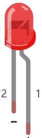
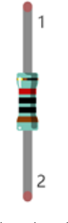

ESP32-S3 board
The brain that runs your uploaded sketch.
TinySkiff ESP32-S3 Lab · Day 7 of 30
Today the LED stops snapping. You keep yesterday's single-LED circuit and upload a sketch that sweeps the pin's brightness from dark to full and back, so the light breathes like a slow tide. The pin still only knows on and off — the fade is that pin flicking thousands of times a second, held on a little longer or shorter each moment. Understand that, and the dimmers, motor speeds, and tones later in the course are all the same move.
TSK-DAY07-BREATHE
Hand this to an agent so it can pull the lesson packet and coach you step by step.
01 First, know the pieces
Five things, all of them familiar from Blink. Tap Define on any part you haven't met — the answer opens as a field note you can read and dismiss without losing your place.
The brain that runs your uploaded sketch.

Spreads the pins into rows you can reach and label.

The light you'll fade — it only works one way round.

Sits in series with the LED to keep the current gentle.

Temporary, solder-free connections.

Uploads the sketch to the board.
02 Make the physical circuit
The official Freenove diagram is your chart — schematic on top, the same circuit built on a breadboard below. Click it to enlarge. This is the same single-LED circuit you built for Blink, so if it's still wired you're ready.
Mind the LED's legs. The LED only lights one way round — long leg toward GPIO 2 through the 220 Ω resistor, short leg to ground. Unplug USB before you move any wire.
03 One action at a time
This is the main path — you can finish the day without opening a single field note. Tap each step as you go to keep your place.
Seat the ESP32-S3 on the GPIO extension board and keep USB unplugged while you wire.
Place the LED so its long leg (+) is on the GPIO 2 side and its short leg (−) heads toward ground.
Put the 220 Ω resistor in series between GPIO 2 and the LED's long leg.
Compare every wire to the chart before you plug in USB.
Open Sketch_04.1_BreathingLight.ino in Arduino IDE and upload it.
Watch the LED fade up and down, over and over.
04 Read just enough code
The whole sketch is short. A few lines hand GPIO 2 to a hardware PWM channel; two loops then sweep its duty cycle up and back down, which is the brightness climbing and sinking. Switch to MicroPython if you'd rather see the same idea in Python — the wiring never changes.
#define PIN_LED 2
#define CHN 0 // PWM channel
#define FRQ 1000 // switching frequency, Hz
#define PWM_BIT 8 // resolution: 0-255
void setup() {
ledcAttachChannel(PIN_LED, FRQ, PWM_BIT, CHN);
}
void loop() {
for (int i = 0; i < 255; i++) { // fade in
ledcWrite(PIN_LED, i);
delay(10);
}
for (int i = 255; i > -1; i--) { // fade out
ledcWrite(PIN_LED, i);
delay(10);
}
}ledcAttachChannel(PIN_LED, FRQ, PWM_BIT, CHN)Hands GPIO 2 to one of the board's hardware PWM channels at 1000 Hz with 8-bit resolution, so from here the chip does the fast switching itself. ledcWrite(PIN_LED, i)Sets the duty cycle from 0 (never on, dark) to 255 (always on, full) — the share of each cycle the pin holds on, which your eye reads as brightness. for (int i = 0; i < 255; i++)The first loop walks the duty up and the second walks it back down; delay(10) sets how long each of the steps lingers, so it sets the breathing speed. Optional side path · same circuit
pwm = PWM(Pin(2), 10000)
while True:
for i in range(1024): # fade in
pwm.duty(i)
sleep_ms(1)
for i in range(1023, -1, -1): # fade out
pwm.duty(i)
sleep_ms(1)PWM(Pin(2), 10000)Sets up PWM on GPIO 2 at 10 kHz — the same fast-switching trick the Arduino sketch uses.pwm.duty(i)Sets brightness by duty, which is how much of each instant the pin is on.Same pin, same wiring. MicroPython here uses a 10-bit duty (0–1023), so the numbers differ from Arduino's 0–255 while the idea is identical. Run it in Thonny if MicroPython is set up; otherwise skip it — it should never block the Arduino-first path.
05 Understand, don't memorise
On Day 3 a pin only ever went full on or full off — HIGH or LOW, nothing between. So how does the same pin now sit at half brightness? It doesn't hold half a voltage. It switches on and off a thousand times a second and spends part of each cycle on. Your eye can't follow flicker that fast, so it averages the on-time into a steady brightness. That is pulse-width modulation, and it is the mechanism behind almost every "analog" thing the board does.
The output pin has two settings only — fully on or fully off. There is no dial for half a volt.
To fake a middle level PWM flips the pin on and off about 1000 times a second
In each on-off cycle the pin holds on for some fraction. On a quarter of the time reads as roughly quarter brightness; on the whole time is full.
The board's ledc channels generate the pulses in dedicated hardware
Sliding the duty from 0 up to 255 and back down is the fade — brightness following the share that's on.
brightness = duty cycle = the share of each fast cycle the pin holds on
Frequency and duty cycle are separate settings. Frequency is how many on-off cycles happen each second (1000 here) and only has to be fast enough to beat your eye. Duty cycle is the share of each cycle that is on, and that one alone sets how bright it looks.
You attach the pin to a channel a single time in setup(). PWM_BIT is 8, so each cycle is split into 256 slices and the level 0 to 255 chooses how many are on. After that the ledc hardware keeps pulsing on its own while ledcWrite() just names a new level.
06 Know it worked
Nothing prints to the screen today — the proof is the LED fading in front of you.
The change should be a smooth slide, never a hard on/off snap. If it snaps, you're likely still running the Blink sketch.
07 Make the idea yours
The fade hides the whole trick, because the switching is too fast to watch. Slow the frequency down by a few thousand times and the flicker becomes visible — and you can see, with your own eyes, that a duty number is really an on-time. Work on a copy of the sketch so today's breathing one stays intact.
On a copy, set FRQ to 4 and replace the two fade loops with a single ledcWrite(PIN_LED, 128), then upload. Instead of a steady half-glow the LED now blinks on and off about four times a second — that blink is the switching your eye normally averages into brightness.
Still at FRQ 4, try ledcWrite(PIN_LED, 64), then 192, uploading each. At 64 the on-flash is brief and the dark gap long; at 192 it flips the other way. The number is the duty cycle — the share of each cycle the pin holds on — so you are watching brightness be built out of time. Restore FRQ 1000 and the fade loops when you're done.
08 Learn it with a hand on the tiller
Every lesson ships with a code and a machine-readable packet, so an agent can guide you with full context.
TSK-DAY07-BREATHE
How the agent should behave: guide one physical connection at a time and wait for confirmation, then teach how PWM builds brightness out of time — duty cycle as the share each fast cycle is on, with the ledc hardware doing the switching. Always check wiring, board, port, and USB before changing code.